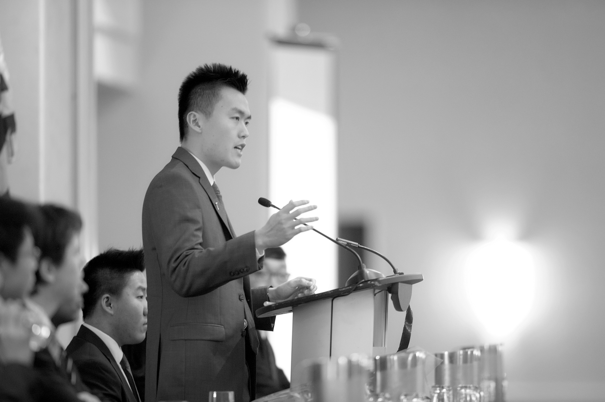
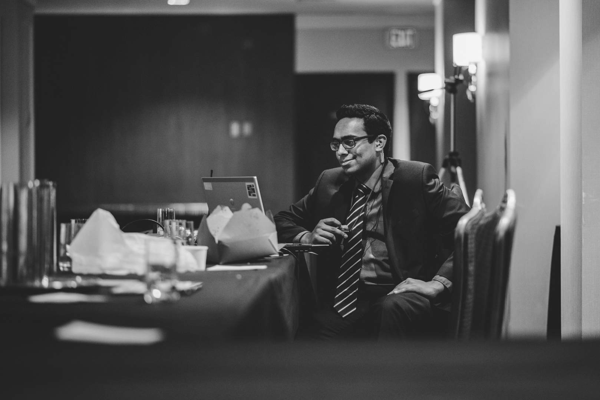

From one student to six hundred
Our Story
PacificMUN had a humble beginning. While it started as a day conference in 2014, it has grown into one of Vancouver’s premier hotel MUN conferences. However, this journey did not happen overnight. After being founded by Jeff Wu, PacificMUN’s current chairman of the board, it operated as a day conference for two years with moderate success. PacificMUN’s true beginning, however, stems from Bryan Buraga’s decision to transform the day conference into a three-day hotel conference, in an attempt to break into the competitive Vancouver hotel conference scene. Inevitably, PacificMUN faced challenges, from the pure lack of experience in running large scale events, or the constant comments of failure, but we kept pushing.

PacificMUN was eventually built into a conference with other 600 attendees, a world-class keynote, and the memories for delegates to remember for the rest of their life. Moving forward, Saad Yasin and Alan Milligan will lead the effort to carry on last year's innovation, perseverance, and quality. After going from 14 secretariat applications in 2016 to over 50 this year, we have built a team of 10 that will continue PacificMUN’s legacy, turning it from a new grassroots conference to a premier conference that lasts indefinitely. Our story will not end here though, after hopefully two successful years, we look forward to seeing PacificMUN for years to come.

Dare to Speak
Our Dream
Simply put, our dream is to create memories. We want all of our attendees to remember PacificMUN for its moments of passion, fun times with friends, and opportunities to enjoy learning about the world. To ensure those memories are made, it is our hope to run a flawless conference. We want every step of the way to be a breeze for all involved, and for their conference memories to be void of any bad experiences.
Our dream is not just about the conference itself, it is also about who can attend. We believe strongly in accessibility, and it is our dream that financial limitations will not become an obstacle in any students participation in our conference. Above all, we want PacificMUN to be a highlight of someone's high school career.
PACIFICMUN 2018
Our Team
Over the past year, ten dedicated individuals have worked through busy days and late nights to make PacificMUN 2018 a reality. While they have individual responsibilities as their title would suggest, the fact is that each member has contributed more than their title. They have contributed to the spirit of this conference, and spent their time not in the name of personal gain, but in the name of crafting a premier quality conference for delegates, sponsor teachers, and staff.